六腑者，传化物而不藏，故实而不能满也。所以然者，水谷入口，则胃实而肠虚；食下，则肠实而胃虚。
——黄帝内经·素问·五藏别论

仲春｜节气｜ 惊蛰 ｜时间｜ 三月五日至三月二十日
今年惊蛰需特别注意的健康问题：呼吸道感染、牙痛、春困、腿脚不利、乳腺问题、失眠早醒
原料：黄豆、白萝卜、葱白连须、蒲公英根。
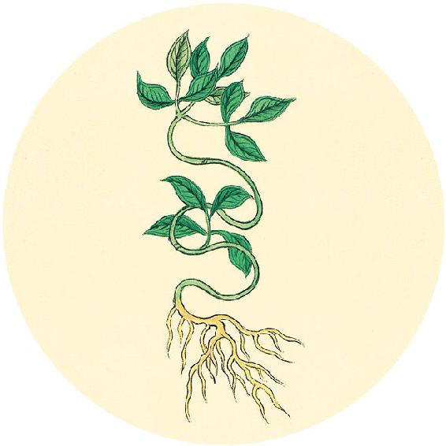
节气食方
黄豆萝卜汤（辛丑岁配方）
原料：黄豆50克，白萝卜150克，葱白连须1根(大葱)或3根（小葱），蒲公英根（干品50克）。
做法：
1. 将黄豆提前用清水泡2小时。
2. 用面粉水将白萝卜（要带皮）和葱白（要留根须）泡洗干净。
3. 锅内放少许油，将黄豆、蒲公英根先加水下锅，用大火煮开，然后转小火煮20分钟左右。
4. 将白萝卜切片，与葱白一起放入锅中煮熟，加少量的盐、胡椒粉起锅。
功效：健脾、清肺、消肿毒，预防肠胃病，提高抵抗力。
六腑者，传化物而不藏，故实而不能满也。所以然者，水谷入口，则胃实而肠虚；食下，则肠实而胃虚。
——黄帝内经·素问·五藏别论
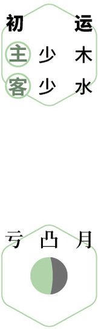
 防病
防病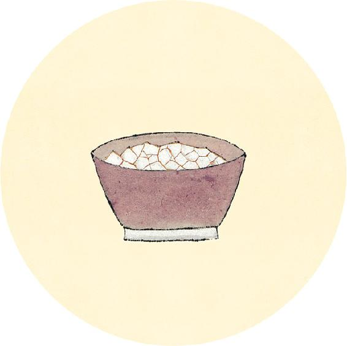
二十四节气茶养生
今年惊蛰节气品茶推荐：牛蒡茶。
惊蛰节气，蛰虫惊醒，病毒也开始活跃起来了。感冒、发热、咳嗽，在这个时节很容易发生，特别是人群密集的办公室和学校。
春季感冒很容易转化为风热，使人咽痛、咳嗽、便秘。可以喝这道茶方预防。
【释义】六腑，是传化饮食而不藏，所以能用饮食来充实，而不能自身保持盈满。之所以出现这种情况，是因为饮食入口后，胃充实，肠中还是空虚的；食物下行后，肠充实了，胃又空虚了。
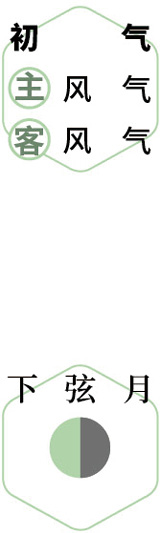
花间酒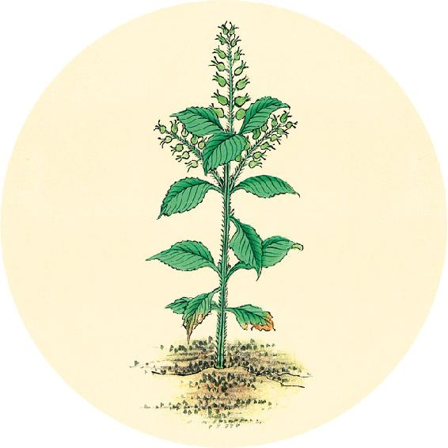
健康提示
桑叶牛蒡茶
原料：霜桑叶5～10克，牛蒡茶20克。
做法：沸水冲泡后饮用或每日三餐煮汤时加入。
功效：清咽利喉、润肠排毒、清凉补血，有助头发生长。
桑叶和牛蒡都可以当蔬菜吃，而且百搭，如果没时间喝茶，也可以放到日常饭菜中一起食用。
故曰实而不满，满而不实也。
——黄帝内经·素问·五藏别论
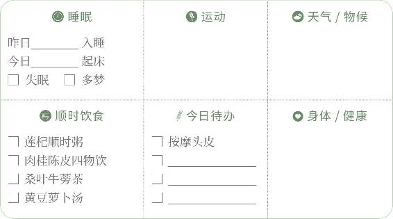
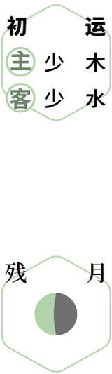
探春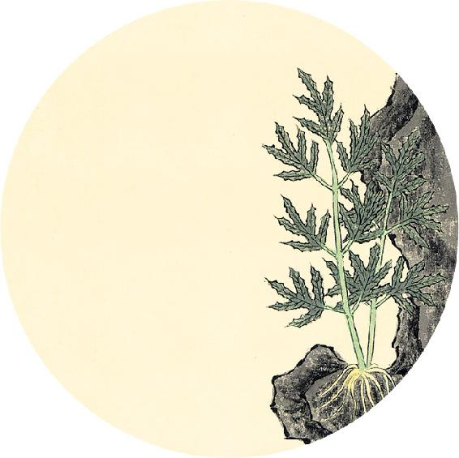
读书
“天下之至柔，驰骋天下之至坚。”
——老子《道德经》
这句话的意思是：天下最柔弱的东西，可以穿透天下最刚强的事物。
女性的能量便是如此。女性善用“以柔克刚”的方法，可以化解许多不必要的矛盾，让自己的生活、心情更顺畅。
【释义】所以说六腑是可以用外物充实，而不能自身保持盛满；五脏则能自身保持盈满，而不能用外物来充实。（满与实，这两个词的含义是有区别的。“满”的本义是水充满容器，这里用来比喻精血充满五脏；“实”的本义是用货物充于屋下，这里用来比喻用饮食充于六腑。腑就是“府”，储藏文书或财物的地方，这里用来比喻六腑内有空腔，可以存物。——允斌注）
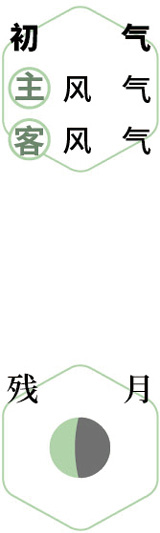
赏花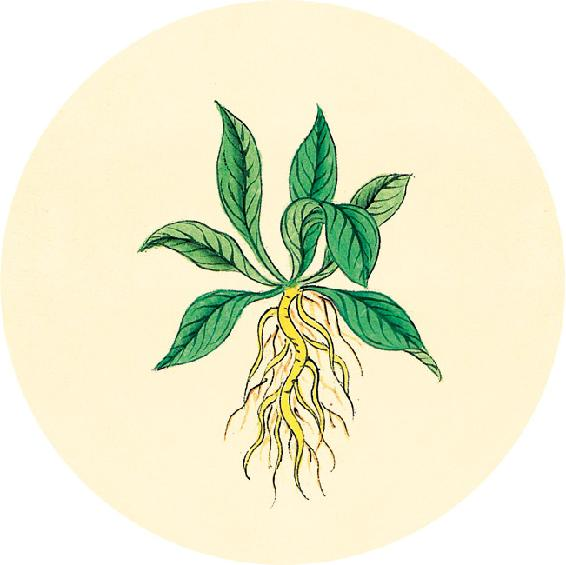
健康提示
惊蛰节气的养生功课：抗呼吸道病毒。
今年惊蛰特殊的养生要点——
今年惊蛰节气，要注意防风湿，常吃调肝、祛风湿的食物。
保养重点：呼吸道、口腔、关节、乳腺。
容易出现的问题：呼吸道感染、牙痛、春困、腿脚不利、乳腺问题、失眠早醒。
胃者，水谷之海，六腑之大源也。五味入口，藏于胃，以养五脏气。
——黄帝内经·素问·五藏别论
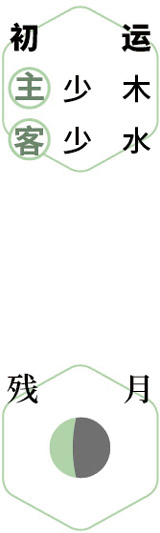
品茗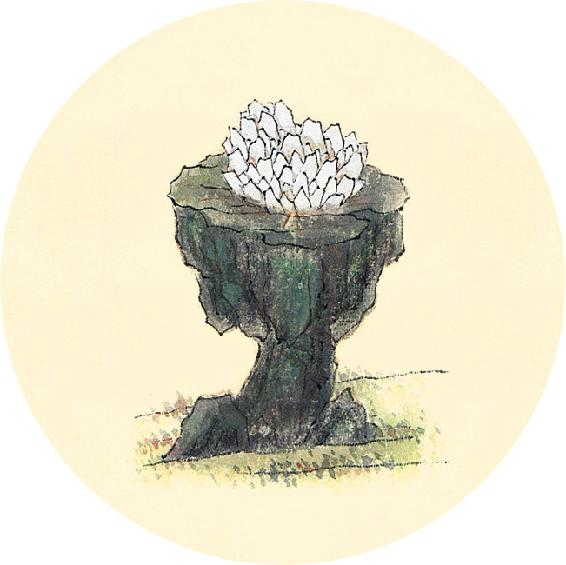
一候反思
近期是否出现以下情况：
很早就醒来 □ 是 □ 否
刷牙时牙龈出血 □ 是 □ 否
脱发 □ 是 □ 否
有1个答“是”，说明冬天补得不够，春天可以吃百合、银耳、党参来补救。
春天不能大补，最好是吃既滋补又不会上肝火的清补食物。党参气血双补，银耳平和无偏，百合补气清虚热，又能助眠，这几样不仅春季，四季都可以吃。
【释义】胃是水谷之海，六腑的泉源，饮食五味入口后，贮留于胃，经脾的运化，来荣养五脏血气。
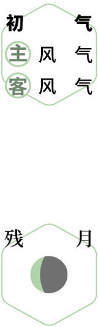
闻啼鸟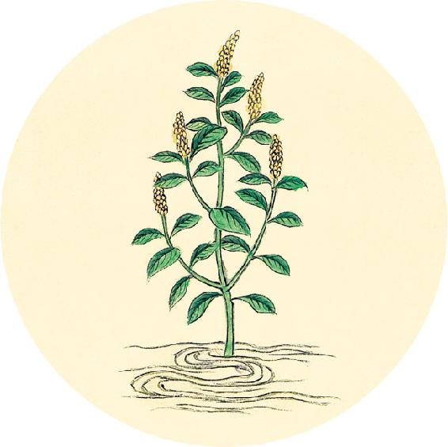
健康提示
今天是九九的第九天，数九到此结束。
从惊蛰开始，进入春天的第二个月。这个时节容易发生传染病。
本月养生关键词：疏肝健脾。
上半月重点：健脾开胃。
下半月重点：疏肝理气。
今年这个月中老年人还需继续注意防范脑卒中和关节病。
凡治病必察其上下，适其脉候，观其志意，与其病也（据《黄帝内经太素》，“也”字应为“能”字，通“态”字——允斌注）。
——黄帝内经·素问·五藏别论
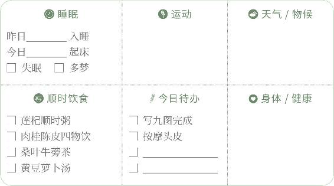
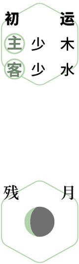
数九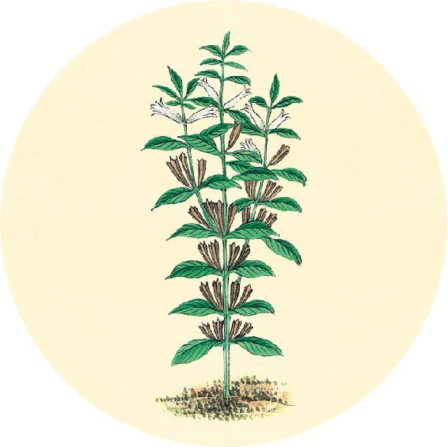
健康提示
辛丑岁初气保健方：肉桂陈皮四物饮（从大寒吃到春分前日）
原料：肉桂10克、陈皮1个、柠檬1个、麦芽糖。
做法：
1. 把柠檬连皮一起切成片，用麦芽糖腌制一晚。
2. 把肉桂、陈皮加水煮20分钟，滤出茶汁，冲泡腌制好的柠檬片。
吃法：代茶饮，柠檬也可以吃掉。
功效：疏肝健脾，暖胃消食，美白皮肤，预防黄褐斑。
【释义】凡是治疗疾病时，必要察明病人的饮食和二便情况，辨清脉象，观察他的情志，以及病态如何。

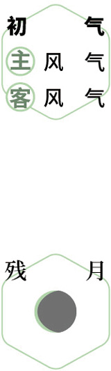
植树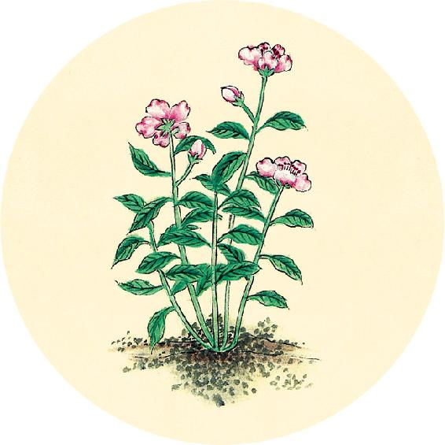
二候反思
平时是否抵抗力较差 □ 是 □ 否
经常感冒咳嗽 □ 是 □ 否
身体湿气重 □ 是 □ 否
体内有寒气 □ 是 □ 否
以上任意一个回答“是”，接下来的两个月，要特别注意防范传染病。
翻到2021年12月25日，记录今天的自查一共有几个“是”。
拘于鬼神者，不可与言至德。恶于针石者，不可与言至巧。病不许治者，病必不治，治之无功矣。
——黄帝内经·素问·五藏别论
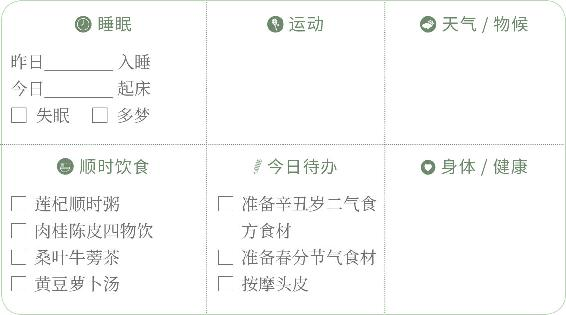
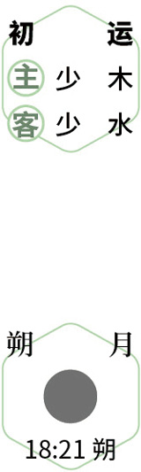
扫房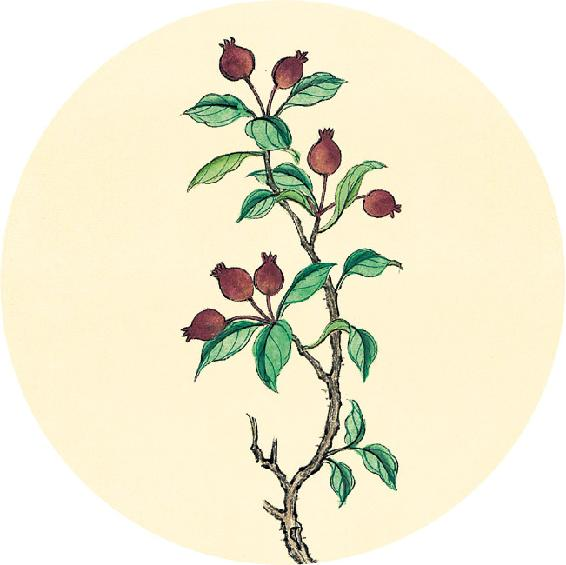
健康提示
二月初二“龙抬头”，这其实指的是天空的星象：由7组星宿组成的龙星，经过一年的回天运行，在二月初二这天，龙角位置的角宿于黄昏之后从东方地平线升起。据专家考证，龙星是中华龙文化的起源。所以，龙并不是一个虚无缥缈的存在，从古至今，龙星一直在陪伴我们。
春季时，在天亮前起床，仰望星空，就能看到中华民族世世代代尊崇的龙星（东方苍龙）。
【释义】如果病人非常迷信鬼神，就无须给他讲医学理论。如果病人不喜欢针石治疗，就无须给他讲针石技巧。如果病人不愿接受治疗，就不必治，勉强治疗也收不到应有的功效。
理发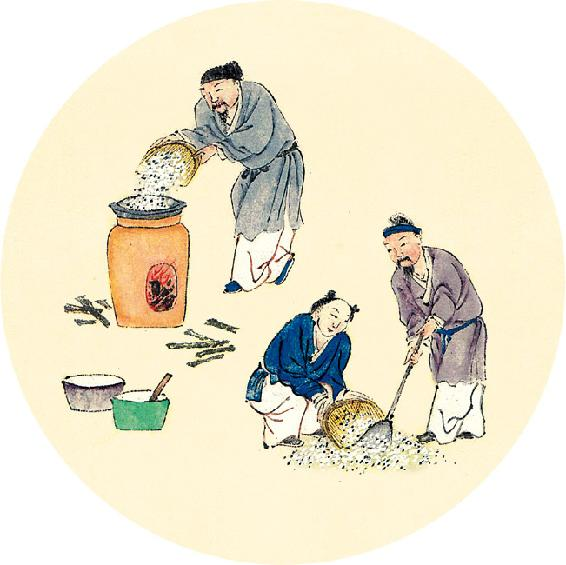
消费提示
买个护用品注意看成分表，是否有致敏成分，并看是否有国家食药监局的审核备案。没有经过审核备案的产品，可能会虚假夸大某些成分或者隐瞒有害成分（激素等）。
专题分类：
安全护肤品鉴别 真假中药鉴别
优劣食材鉴别 化妆品中的致敏成分
洗发染发品中的有害成分
食品中的硫残
黄帝问曰：医之治病也，一病而治各不同，皆愈，何也？岐伯对曰：地势使然也。
——黄帝内经·素问·异法方宜论
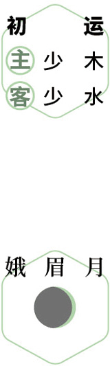
观星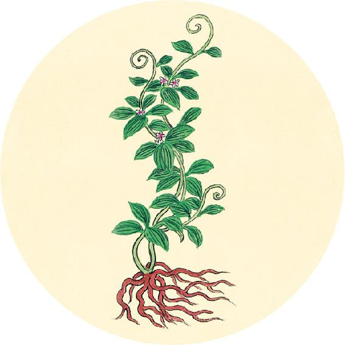
健康提示
从现在开始，进入一年中头发生长最旺盛的阶段。如果能利用这个黄金时期来养护头发，在接下来的三个月中，头发会长得比较好。
不过，今年整体是不利于头发生长的一年。身体湿气较重的人，更要特别注意预防脱发。
多吃补气血、健脾胃、祛湿气的食物，如枸杞、银耳、葛根、茯苓、莲子、荷叶、陈皮等，会有帮助。
【释义】黄帝问道：医生治病，一样的病，而治法各不相同，但都痊愈了，这是什么道理呢？岐伯回答说：这是地理因素造成的。
养发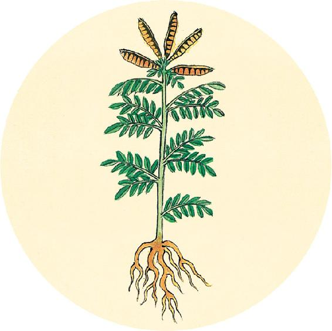
健康提示
明天是全国爱肝日，这个节日定在春天。春天正是调肝的季节。
注意：调肝，不是补肝。春季不能随意补肝，否则可能上肝火。
春季补的是脾，而对肝则是调养——清肝、疏肝、保肝。
清肝食方：蒲公英根、鱼腥草。
疏肝食方：玫瑰、月季、茉莉、陈皮。
保肝食方：五味子、山茱萸、甘草陈皮梅子汤（见10月5日）、川陈枳椇四物饮（见5月18日）。
故东方之域，天地之所始生也。鱼盐之地，海滨傍水，其民食鱼而嗜咸，皆安其处，美其食。鱼者使人热中，盐者胜血，故其民皆黑色疏理。其病皆为痈（yōng）疡（yáng），其治宜砭石。故砭石者，亦从东方来。
——黄帝内经·素问·异法方宜论
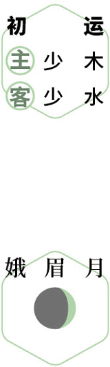
读书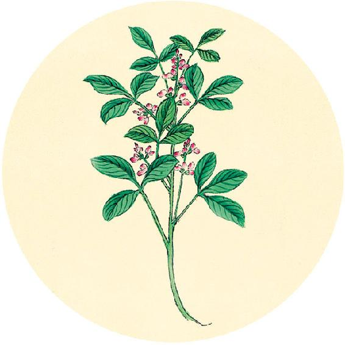
食材准备
后天进入春分节气。
1.防感护生汤
原料：牛蒡、荠菜、萝卜缨、干香菇。
2.节气养生茶
原料：玫瑰、月季、茉莉花。
3.寒食节：寒食平安粥
原料：大麦仁、甜杏仁、麦芽糖或蜂蜜。
4. 辛丑岁二气保健方：加味果菊清饮（从春分吃到小满前日，做法见3月30日）
原料：蒲公英根、牛蒡、罗汉果、菊花、鱼腥草。
5. 辛丑岁全年保健粥:莲杞顺时粥（做法见2月11日）
原料：枸杞子、莲子、炒荷叶、川陈皮、茯苓、粥料。
【释义】东方地区，是天地阳气始生之处。出产鱼和盐的地方，由于靠近海挨着水，当地居民多吃鱼类而且喜欢咸味，他们安于本地生活，享受美食。但是鱼吃多了，会使热邪滞留肠胃，盐吃多了，会使人伤血，因此当地居民大都肤色较黑，肌理疏松，易生痈疡疾病，治疗宜用砭石。所以砭石疗法，也是从东方传来的。
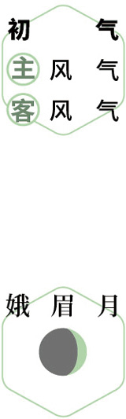
护肝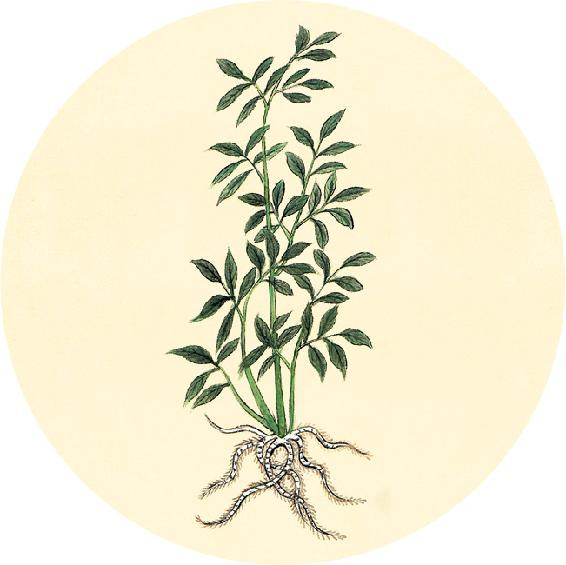
节气总结备
喝黄豆萝卜汤的次数________
喝肉桂陈皮四物饮的次数________
喝莲杞顺时粥的次数________
户外运动的次数________
身体哪些方面有改善 ________________________________________
春分前一日为“离日”（关于离日的解释参见9月22日），宜静养。
西方者，金玉之域，沙石之处，天地之所收引也。其民陵居而多风，水土刚强，其民不衣（不衣丝绵）而褐（毛布）荐（细草所编的席），其民华食而脂肥，故邪不能伤其形体，其病生于内，其治宜毒药。故毒药者亦从西方来。
——黄帝内经·素问·异法方宜论
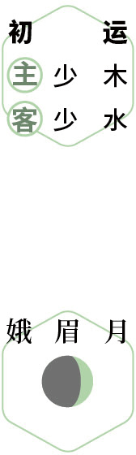
静养